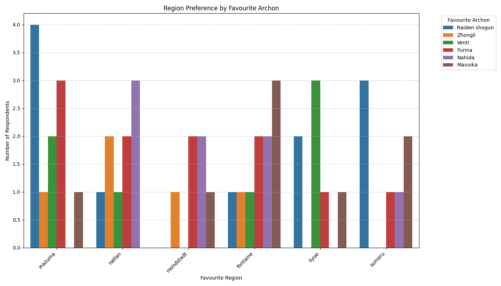

Light Mode
Dark Mode
Genshin Impact Survey Analysis: Player Behavior & Preferences
Problem Statement (Objective)
"Can we predict whether a player participates in Spiral Abyss based on their gameplay preferences and profile?"
Cluster Analysis Graph

Python Code: Genshin Impact Player Clustering
import pandas as pd
from sklearn.preprocessing import OneHotEncoder
from sklearn.decomposition import PCA
import matplotlib.pyplot as plt
import seaborn as sns
from sklearn.cluster import KMeans # KMeans is needed to get the cluster labels
# Load the dataset
df = pd.read_excel('yoyo.xlsx')
clustering_cols = [col for col in df.columns if col.startswith('Q')]
df_clustering = df[clustering_cols].copy()
categorical_cols = df_clustering.columns
# Apply One-Hot Encoding
encoder = OneHotEncoder(handle_unknown='ignore', sparse_output=False)
encoded_features = encoder.fit_transform(df_clustering[categorical_cols])
encoded_df = pd.DataFrame(encoded_features, columns=encoder.get_feature_names_out(categorical_cols))
n_clusters = 3
kmeans = KMeans(n_clusters=n_clusters, random_state=42, n_init=10)
clusters = kmeans.fit_predict(encoded_df)
pca = PCA(n_components=2)
principal_components = pca.fit_transform(encoded_df)
pca_df = pd.DataFrame(data=principal_components, columns=['PC1', 'PC2'])
pca_df['Cluster'] = clusters
# Visualize the clusters using a scatter plot
plt.figure(figsize=(10, 8))
sns.scatterplot(x='PC1', y='PC2', hue='Cluster', palette='viridis', data=pca_df, s=100, alpha=0.8)
plt.title('2D PCA of Clusters')
plt.xlabel('Principal Component 1')
plt.ylabel('Principal Component 2')
plt.grid(True)
plt.savefig('cluster_scatterplot_from_xlsx.png') # Saves the plot to a file
plt.close() # Closes the plot to prevent it from displaying directly in some environments
Cluster Insights
Cluster 0 Insights:
- Predominantly mobile players (100.00%).
- Top favorite region is Inazuma (25.00%).
- Top favorite element is Hydro (31.25%).
- Top favorite weapon type is Bow (31.25%).
- Most of these players do play Spiral Abyss (100.00%) and have an Adventure Rank of 60 (62.50%).
- Their top favorite Archon is Venti (31.25%).
Cluster 1 Insights:
- Mainly PC players (94.44%).
- Also show a strong preference for Inazuma region (33.33%).
- Top favorite element is Dendro (27.78%).
- Top favorite weapon type is Polearm (38.89%).
- Most do play Spiral Abyss (83.33%) and have an Adventure Rank of 60 (83.33%).
- Their top favorite Archon is Furina (33.33%).
Cluster 2 Insights:
- A mixed group in terms of platform, with mobile being the most frequent (37.50%).
- Have a clear preference for the Sumeru region (43.75%).
- Top favorite element is Pyro (25.00%).
- Top favorite weapon type is Bow (37.50%).
- Notably, none of the players in this cluster play Spiral Abyss (100.00% 'no'). Their Adventure Rank is often 60 (37.50%), but this is less dominant than in other clusters.
- Their top favorite Archon is Nahida (25.00%).
Overall Key Findings
Platform Preference Graph

Python Code: Platform Preference Bar Chart
import pandas as pd
import matplotlib.pyplot as plt
import seaborn as sns
# Load the dataset
df = pd.read_excel('yoyo.xlsx')
df['Q1. What platform do you usually play Genshin Impact on?'] = df['Q1. What platform do you usually play Genshin Impact on?'].replace({
'mocile': 'mobile',
'movile': 'mobile'
})
platform_data_corrected = df['Q1. What platform do you usually play Genshin Impact on?']
plt.figure(figsize=(10, 6))
sns.countplot(y=platform_data_corrected, order=platform_data_corrected.value_counts().index, palette='viridis')
plt.title('Most Popular Platforms for Playing Genshin Impact (Corrected)')
plt.xlabel('Number of Respondents')
plt.ylabel('Platform')
plt.grid(axis='x', linestyle='--', alpha=0.7)
plt.tight_layout()
plt.savefig('most_popular_platforms_bar_chart_corrected.png')
plt.close()
print("Typos corrected and updated bar chart for 'Most Popular Platforms' generated successfully.")
Preferred Gaming Platforms
- PC Dominance: The data clearly indicates that PC is the most preferred platform for playing Genshin Impact among the surveyed individuals, accounting for the largest proportion of respondents.
- Strong Mobile Presence: Mobile devices represent the second most popular platform, showing a substantial segment of players who prefer handheld gaming for Genshin Impact. This indicates the game's significant reach on portable devices.
- Limited Console Preference: PlayStation (PS) usage is notably lower compared to both PC and Mobile, suggesting that console gaming, at least among this specific respondent group, is a less common choice for Genshin Impact.
Region and Archon Preference Alignment
Region vs. Archon Preference Graph
Python Code: Region vs. Archon Preference Grouped Bar Chart
import pandas as pd
import matplotlib.pyplot as plt
import seaborn as sns
df = pd.read_excel('yoyo.xlsx')
df['Q1. What platform do you usually play Genshin Impact on?'] = df['Q1. What platform do you usually play Genshin Impact on?'].replace({
'mocile': 'mobile',
'movile': 'mobile'
})
region_col = 'Q2. Which region in the game is your favorite?'
archon_col = 'Q7. Who is your favourite archon?'
# Create a grouped bar chart
plt.figure(figsize=(14, 8))
sns.countplot(data=df, x=region_col, hue=archon_col, palette='tab10')
plt.title('Region Preference by Favourite Archon')
plt.xlabel('Favourite Region')
plt.ylabel('Number of Respondents')
plt.xticks(rotation=45, ha='right') # Rotate x-axis labels for readability
plt.legend(title='Favourite Archon', bbox_to_anchor=(1.05, 1), loc='upper left') # Move legend outside
plt.grid(axis='y', linestyle='--', alpha=0.7)
plt.tight_layout() # Adjust layout to prevent labels from overlapping
plt.savefig('region_archon_preference_grouped_bar_chart.png') # Saving to a general name
plt.close()
print("Grouped bar chart for Region and Archon Preference generated successfully.")
- Strong Alignment of Region and Archon Preference: For most regions, there's a very strong tendency for respondents to favor the Archon associated with that specific region.
- Mondstadt: Players whose favorite region is Mondstadt overwhelmingly prefer Venti.
- Liyue: Similarly, Zhongli is the clear favorite among Liyue enthusiasts.
- Inazuma: The Raiden Shogun (Ei) is the dominant choice for those who favor Inazuma.
- Sumeru: Nahida is the most preferred Archon by players who choose Sumeru as their favorite region.
- Fontaine: Furina is the most popular Archon among those who favor Fontaine.
- Minor Cross-Regional Preferences: While the primary alignment is strong, the chart also shows a smaller number of players who might prefer an Archon from a different region than their favorite. For example, some Mondstadt fans might like Nahida, or some Liyue fans might like Furina, but these numbers are significantly lower than the region-specific Archon preference.
- Insights into Character Affinity: This strong correlation suggests that players often develop a deep connection to the lore, aesthetics, and characters of a region, with the Archon serving as a central figure embodying that region's appeal. It indicates that the Archons are highly successful in representing their respective nations in the eyes of players.
Python Code: Random Forest Classifier for Platform Prediction
import pandas as pd
from sklearn.model_selection import train_test_split
from sklearn.ensemble import RandomForestClassifier
from sklearn.preprocessing import OneHotEncoder
from sklearn.metrics import accuracy_score
# Define the input file name - this MUST match the file you have saved
input_file_name = 'genshin_data.xlsx - Sheet1.csv'
try:
# Load the dataset
df = pd.read_csv(input_file_name)
# Apply preprocessing: Standardize platform names in Q1 (target variable)
if 'Q1. What platform do you usually play Genshin Impact on?' in df.columns:
df['Q1. What platform do you usually play Genshin Impact on?'] = df['Q1. What platform do you usually play Genshin Impact on?'].replace({
'mocile': 'mobile',
'movile': 'mobile'
})
else:
print("Warning: 'Q1. What platform do you usually play Genshin Impact on?' column not found for platform correction.")
raise ValueError("Target column 'Q1. What platform do you usually play Genshin Impact on?' not found.")
# Apply preprocessing: Capitalize the first letter of 'user' column entries
if 'user' in df.columns:
df['user'] = df['user'].astype(str).str.capitalize()
# No else warning needed, as 'user' is not a feature/target
# Define target and features
target_column = 'Q1. What platform do you usually play Genshin Impact on?'
# Features are all other 'Q' columns excluding the target
feature_columns = [col for col in df.columns if col.startswith('Q') and col != target_column]
X = df[feature_columns]
y = df[target_column]
# One-Hot Encode the features (X)
# Ensure all feature columns are treated as categorical for encoding
encoder = OneHotEncoder(handle_unknown='ignore', sparse_output=False)
X_encoded = encoder.fit_transform(X)
X_encoded_df = pd.DataFrame(X_encoded, columns=encoder.get_feature_names_out(feature_columns))
# Split the data into training and testing sets
# Using stratify=y to maintain the same proportion of target classes in train and test sets
X_train, X_test, y_train, y_test = train_test_split(X_encoded_df, y, test_size=0.3, random_state=42, stratify=y)
# Initialize and train the Random Forest Classifier
rf_classifier = RandomForestClassifier(n_estimators=100, random_state=42)
rf_classifier.fit(X_train, y_train)
# Make predictions on the test set
y_pred = rf_classifier.predict(y_test)
# Calculate the accuracy
accuracy = accuracy_score(y_test, y_pred)
print(f"The Accuracy of the Random Forest Classifier is: {accuracy:.2f}")
print("\nWhat this Accuracy means:")
print(" - Accuracy measures the proportion of correctly predicted instances out of the total instances.")
print(" - In this case, it indicates how well the model can predict a player's favorite platform ('Q1') based on their other in-game preferences (region, element, weapon, favorite/hated characters).")
print(f" - An accuracy of {accuracy:.2%} means that the model correctly predicted the platform for {accuracy:.2%} of the players in the test set.")
except FileNotFoundError:
print(f"Error: The file '{input_file_name}' was not found.")
print("Please ensure the file is in the same directory as your Python script, or provide the full path.")
except ValueError as ve:
print(f"Data Error: {ve}")
except Exception as e:
print(f"An unexpected error occurred: {e}")
Prediction Accuracy: 46.67%